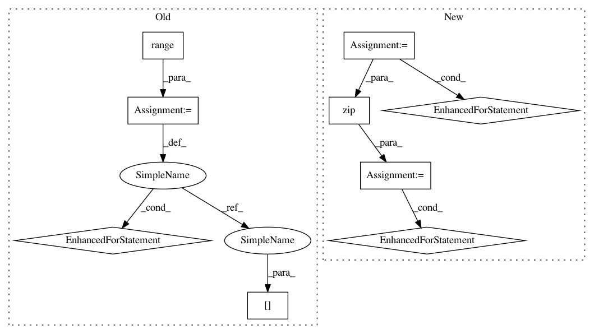

94dbc3042f5a85b399f5ce2859d4e8fbafd235b9,tests/keras/backend/backend_test.py,,check_two_tensor_operation,#Any#Any#Any#Any#,37
Before Change
for x, y, k in zip(x_list, y_list, backend_list):
z_list.append(k.eval(getattr(k, function_name)(x, y, **kwargs)))
for i in range(len(z_list) - 1):
assert z_list[i].shape == z_list[i + 1].shape
assert_allclose(z_list[i], z_list[i + 1], atol=1e-05)
if hasattr(z_list[i], "_keras_shape"):
assert z_list[i]._keras_shape == z_list[i].shape
def cntk_check_single_tensor_operation(function_name, input_shape, **kwargs):
val = np.random.random(input_shape) - 0.5
xtf = KTF.variable(val)
xc = KC.placeholder(input_shape)
After Change
yval = np.random.random(y_input_shape) - 0.5
z_list = []
for k in backend_list:
if k == KCSD:
z = cntk_func_two_tensor(function_name, x_input_shape,
y=yval, **kwargs)([xval])[0]
elif k == KCTD:
z = cntk_func_two_tensor(function_name, x_input_shape,
y=y_input_shape, **kwargs)([xval, yval])[0]
else:
z = k.eval(getattr(k, function_name)(k.variable(xval), k.variable(yval), **kwargs))
if hasattr(z, "_keras_shape"):
assert z._keras_shape == z.shape
z_list += [z]
for (z1, z2) in zip(z_list[1:], z_list[:-1]):
assert z1.shape == z2.shape
assert_allclose(z1, z2, atol=1e-05)
def check_cross_entropy_with_valid_probability_distribution():
xval = np.asarray([[0.26157712, 0.0432167], [-0.43380741, 0.30559841],
[0.20225059, -0.38956559], [-0.13805378, 0.08506755]], dtype=np.float32)
xtf = KTF.variable(xval)
In pattern: SUPERPATTERN
Frequency: 4
Non-data size: 9
Instances
Project Name: keras-team/keras
Commit Name: 94dbc3042f5a85b399f5ce2859d4e8fbafd235b9
Time: 2017-07-06
Author: me@taehoonlee.com
File Name: tests/keras/backend/backend_test.py
Class Name:
Method Name: check_two_tensor_operation
Project Name: AlexEMG/DeepLabCut
Commit Name: 9c3d9ba05502b5f553bc8abc44d08e09e1851e68
Time: 2021-02-05
Author: 30733203+jeylau@users.noreply.github.com
File Name: deeplabcut/pose_estimation_tensorflow/predict_multianimal.py
Class Name:
Method Name: GetPoseandCostsF
Project Name: AlexEMG/DeepLabCut
Commit Name: d63692e0304ae593352d509e0222f0d5befc67dc
Time: 2021-01-06
Author: 30733203+jeylau@users.noreply.github.com
File Name: deeplabcut/pose_estimation_tensorflow/predict_multianimal.py
Class Name:
Method Name: GetPoseandCostsF
Project Name: keras-team/keras
Commit Name: 94dbc3042f5a85b399f5ce2859d4e8fbafd235b9
Time: 2017-07-06
Author: me@taehoonlee.com
File Name: tests/keras/backend/backend_test.py
Class Name:
Method Name: check_single_tensor_operation